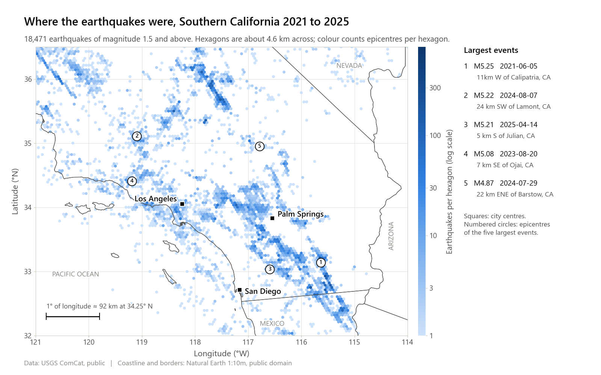
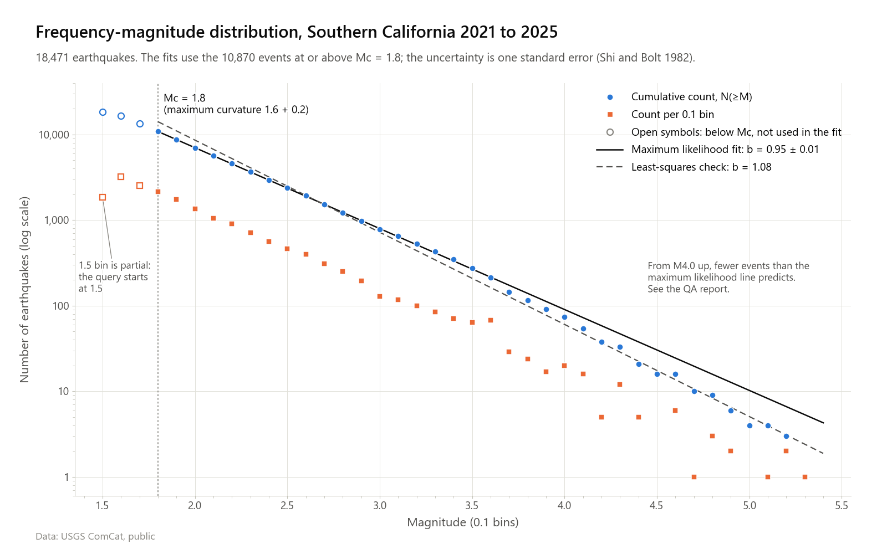
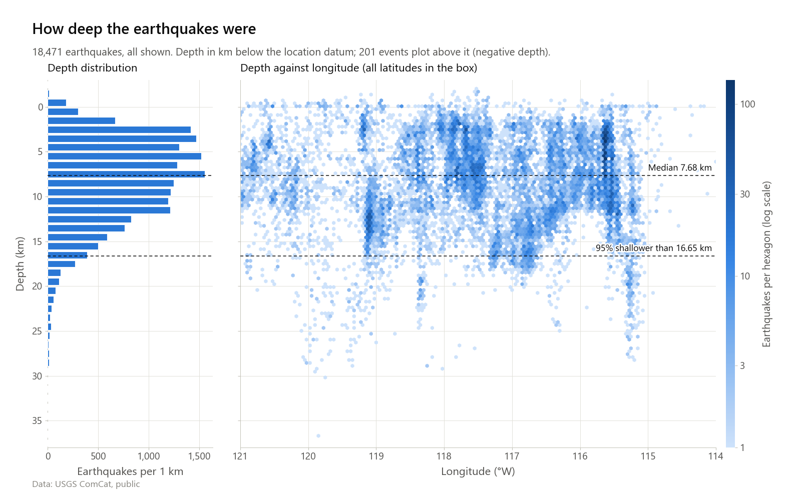
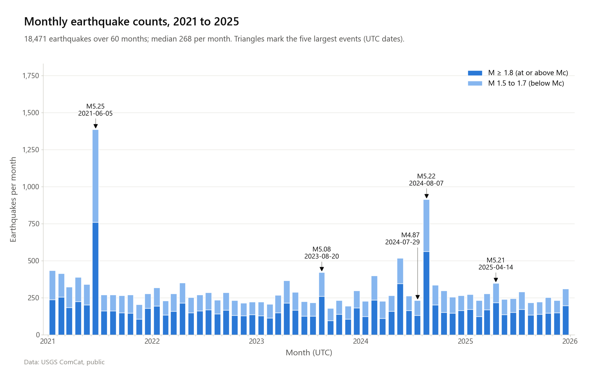
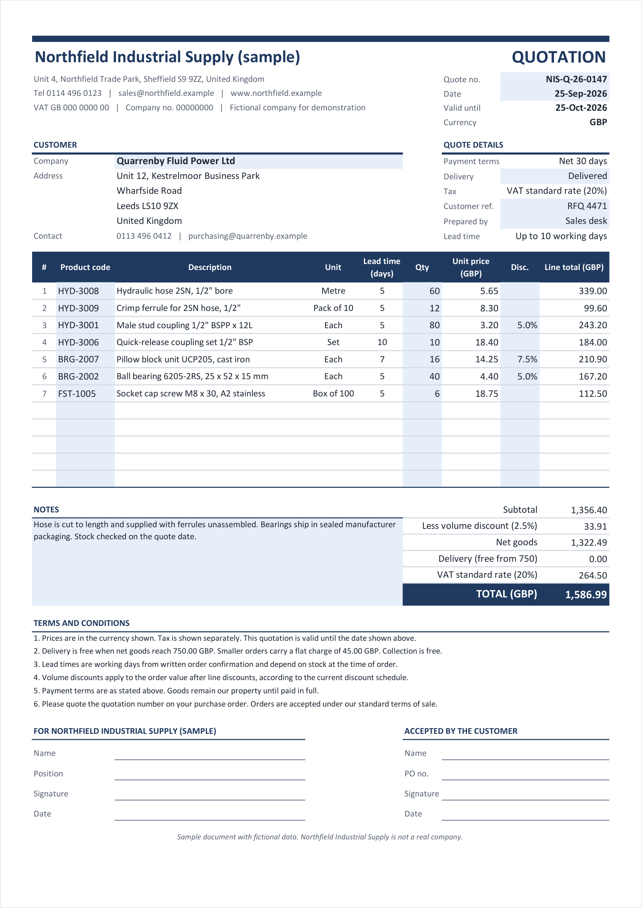
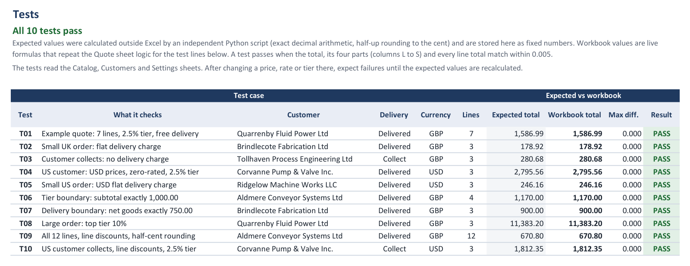
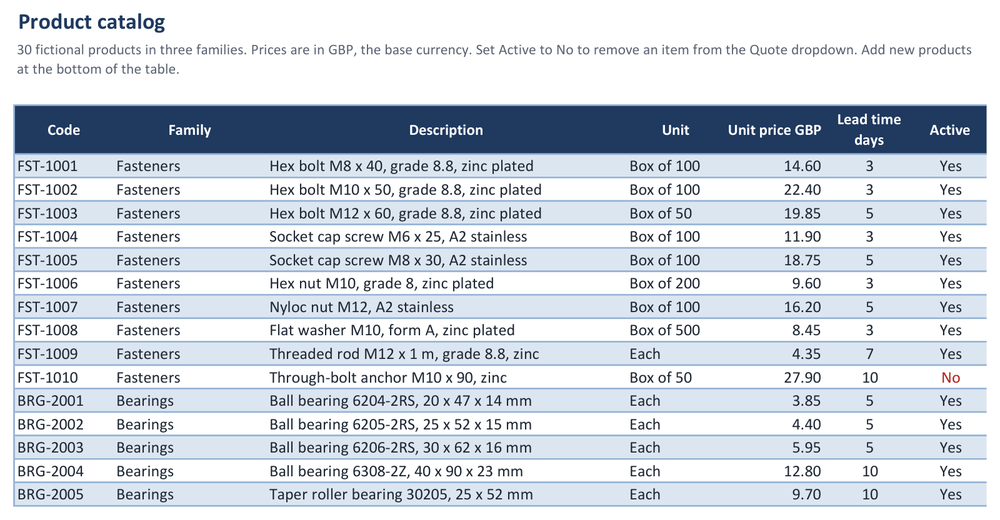
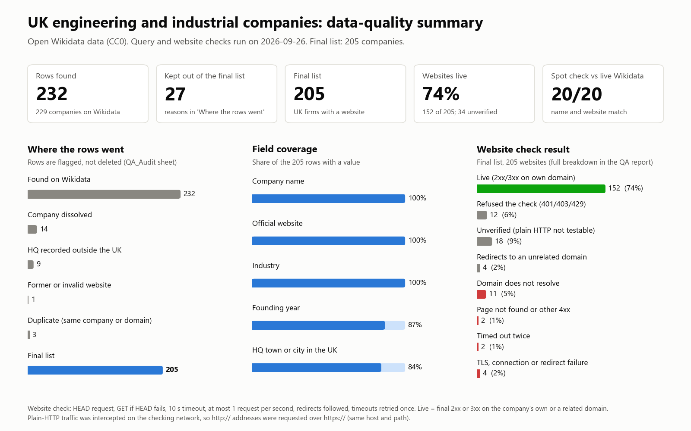

Worked samples you can open and check. Each one is built on public or fictional data, so the method and every check can be shown in full. Client projects stay private, and paid deliveries come with the same kind of QA report.
19,442 records from a public catalogue, cleaned to 18,471 earthquakes, with a documented magnitude of completeness and a Gutenberg-Richter b-value checked seven ways.




How are earthquake sizes distributed in Southern California, and above what magnitude is the catalogue complete?
USGS ComCat, 2021 to 2025, magnitude 1.5 and above, box 32 to 36.5 N and 121 to 114 W. 19,442 rows from ten queries, each below the service cap.
Removed 966 non-earthquakes, mostly quarry blasts, and 5 events listed twice by two networks. Exclusions are logged by event id. Set the magnitude of completeness, Mc, by maximum curvature plus 0.2, then the Gutenberg-Richter b-value by maximum likelihood.
A second 2023 download at all magnitudes matched the main data event for event. It shows b is stable from M1.5, below Mc. Least squares on the straight part gives 0.94.
18,471 earthquakes. Mc = 1.8. b = 0.95 ± 0.01, near the usual California value, 1.0. Least squares over all magnitudes gives 1.08, because events above M4 are fewer than the line predicts. A fit below M3.3, before the magnitude type changes, gives 0.95. Largest event: M5.25, 2021-06-05.
A cleaned catalogue with an exclusion log, four figures, a QA report with every check and limit, and a results file holding every number.
Pick a customer and products from dropdowns; prices, discounts, delivery and tax fill in, and the quote prints on one A4 page. Ten test quotes prove the totals.



Quotes copied from old files carry stale prices, manual discounts and unchecked totals. They are slow to make and hard to review.
A quote workbook for a fictional industrial supplier. Pick a customer and the address, currency, payment terms and tax fill in. Each of 12 lines takes a code from a dropdown of active products, then pulls description, unit, price and lead time from the catalog. Discount tiers, delivery charges and tax rates live on a Settings sheet. The quote prints on one A4 page.
Dropdowns and limits reject unknown codes, zero quantities and discounts above the maximum. Formula cells are locked; only shaded inputs change. A check column flags inactive or unknown products. A Tests sheet holds 10 test quotes, including boundary and rounding cases, with expected totals calculated outside Excel. All 10 pass, also when entered on the quote sheet itself.
The workbook set up with their products, customers and pricing rules, test quotes for their cases, and a short QA report with results and limits.

UK engineering and industrial companies, each with a working official website.
Wikidata, an open database (CC0). One query returned 232 company and website pairs across 17 industry codes.
I cleaned and validated every website address. I flagged 14 closed companies, 1 former website, 6 firms with their head office abroad and 3 duplicates. Nothing was deleted. Each row keeps its reason.
I tested every website at one request per second and retried timeouts once. I re-checked 20 random rows against live Wikidata: 20 of 20 names and 20 of 20 websites matched. An earlier run of this check caught a flaw in my own query. I fixed it and rebuilt everything.
205 companies. 152 websites (74%) answered normally on the company's own domain. 34 could not be verified automatically. 84% have a UK head office town or city and 87% a founding year.
An Excel file with the clean list, an audit sheet and a coverage summary. A CSV copy. A short QA report.